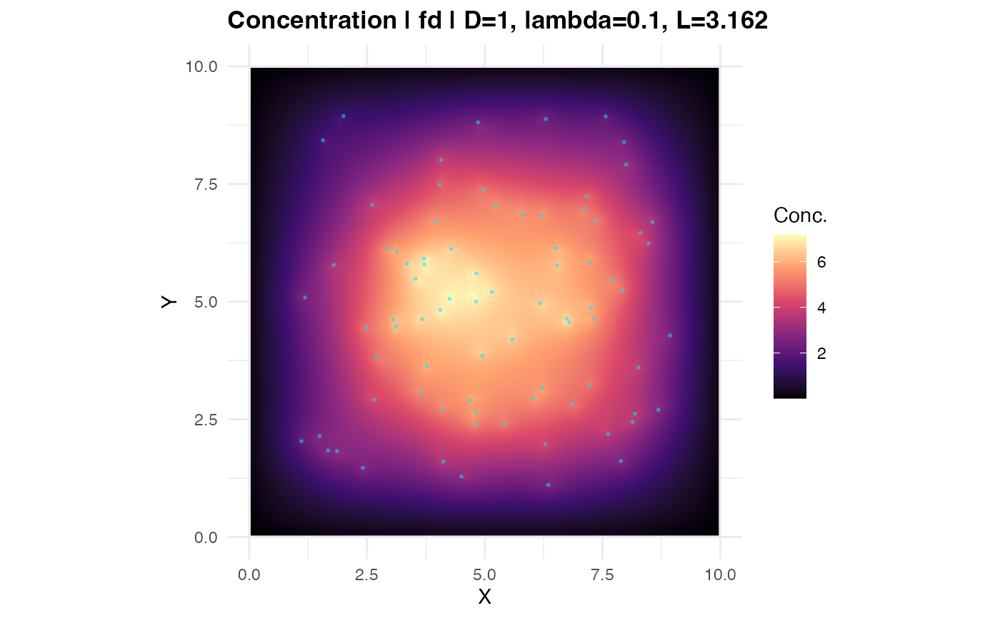

Produces a ggplot2 raster visualisation of a field returned by
estimate_concentration_field(). Optionally overlays transcript point
locations and iso-concentration contour lines.
Usage
plot_concentration_field(
result,
transcript_coords = NULL,
show_sources = TRUE,
show_contours = FALSE,
n_contours = 8L,
palette = "magma",
interpolate = TRUE,
log_scale = FALSE,
pt_size = 0.4,
pt_alpha = 0.4,
pt_color = "#00e5ff",
title = NULL
)Arguments
- result
A list returned by
estimate_concentration_field().- transcript_coords
Optional
data.framewith columnsxandyto overlay as points.- show_sources
Logical. If
TRUEandtranscript_coordsis supplied, overlay points. DefaultTRUE.- show_contours
Logical. Overlay iso-concentration contours. Default
FALSE.- n_contours
Integer. Number of contour levels. Default
8L.- palette
Viridis palette name (
"magma","viridis", etc.). Default"magma".- interpolate
Logical. Use bilinear interpolation in
geom_raster. DefaultTRUE.- log_scale
Logical. Plot
log1p(field)instead of raw field. DefaultFALSE.- pt_size
Point size for transcript overlay. Default
0.4.- pt_alpha
Point transparency. Default
0.4.- pt_color
Point colour. Default
"#00e5ff".- title
Optional plot title; auto-generated from params if
NULL.
Examples
library(sf)
set.seed(1)
sq <- st_polygon(list(cbind(c(0,10,10,0,0), c(0,0,10,10,0))))
mask <- st_sfc(sq)
tc <- data.frame(x = runif(80, 1, 9), y = runif(80, 1, 9))
res <- estimate_concentration_field(mask, tc, grid_resolution = 64L,
verbose = FALSE)
if (requireNamespace("ggplot2", quietly = TRUE))
plot_concentration_field(res, tc)
